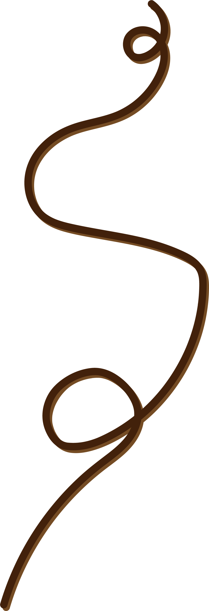
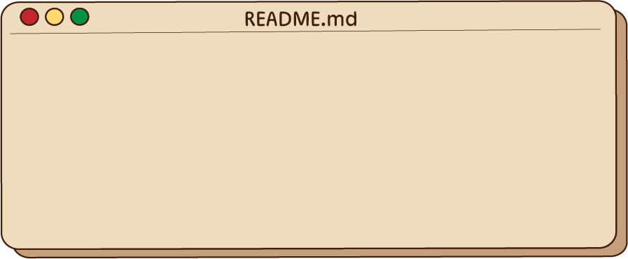
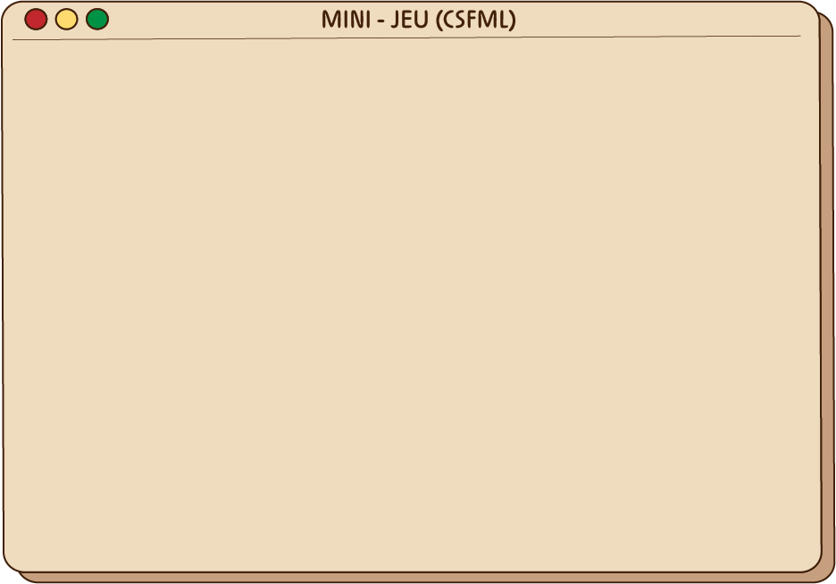
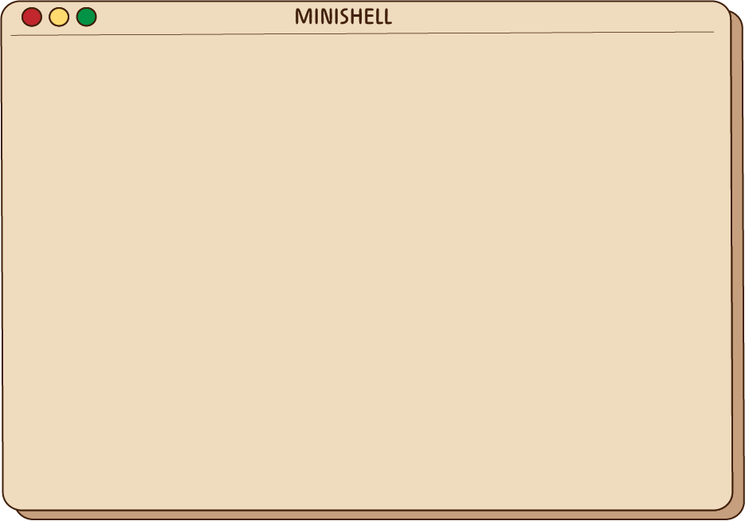

Réalisation no-code du site web de Agate-Ethikwear, projet de sous-vêtements responsables et engagé dans la cause féminine, avec Wordpress. Barre de recherche fonctionnelle.

Brochetta est un jeu inspiré du célèbre "Duck-Hunt". Réalisé en C grâce à la librairie CSFML depuis un shell Linux, Le Jeu brochetta était un bonus réalisé lors d'un projet Ymersions "Brochetta" une chaîne de food-truck qui propose des brochettes à composer, dans une ambiance convivial et un visuel cartoon.

Reproduction d'un shell sur Linux, avec des commandes de bases comme ; ls (-a -l..) cd (. .. /) rm (-r -f), touch, emacs, envir, mkdir, exit, clean..